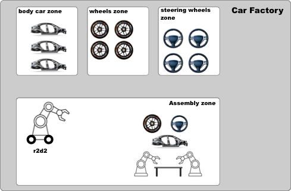
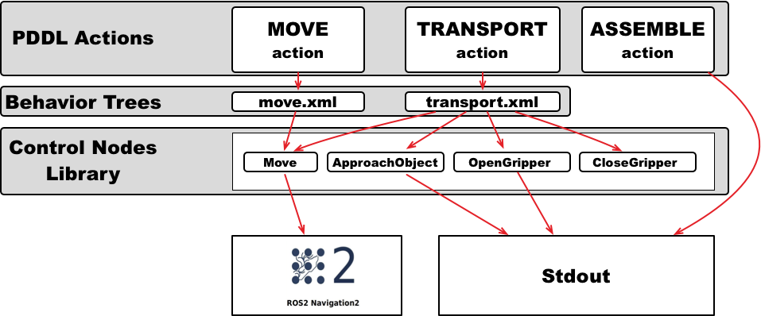

Implement actions as Behavior Trees
Overview
Behavior Trees are a great way to implement actions. Instead of implementing an action, we specify an xml file with the structure of a behavior Tree and implement the tree nodes. This allows you to easily modify the implementation of an action, and reuse the nodes that are part of it in different behavior trees.
In PlanSys2 we will use the BehaviorTree.CPP package from Davide Faconti. Read the tutorials there to learn more control nodes and so more sophisticated actions.
In this tutorial we are going to see an example of a car assembly factory. The robots in this factory must transport the parts of a car from the areas where they are stored to the assembly area, in order to assemble a car.


You can find the PDDL domain of this tutorial in this file.
Tutorial Steps
0- Requisites
If you haven’t done yet, clone in your workspace and build the PlanSys2 examples
cd <your_workspace> git clone -b <ros2-distro> https://github.com/PlanSys2/ros2_planning_system_examples.git src/ros2_planning_system_examples rosdep install --from-paths src --ignore-src -r -y colcon build --symlink-install
1- Running the example
Open a new terminal and run PlanSys2:
ros2 launch plansys2_bt_example plansys2_bt_example.launch.yaml
The robots navigate with EasyNav (the example needs it: without it, the
MoveBT node is not built). Open a new terminal and run a node that simulates it, in which each navigation takes 10 s; or run the real EasyNav with a simulator instead:ros2 run plansys2_bt_example easynav_sim_node
Open a new terminal and run the PlanSys2 terminal:
ros2 run plansys2_terminal plansys2_terminal
In the PlanSys2 terminal shell, copy and paste the next commands to init the knowledge of the system and set the goal:
set instance r2d2 robot set instance wheels_zone zone set instance steering_wheels_zone zone set instance body_car_zone zone set instance assembly_zone zone set instance recharge_zone zone set instance wheel_1 piece set instance body_car_1 piece set instance steering_wheel_1 piece set instance wheel_2 piece set instance body_car_2 piece set instance steering_wheel_2 piece set instance wheel_3 piece set instance body_car_3 piece set instance steering_wheel_3 piece set instance car_1 car set instance car_2 car set instance car_3 car set predicate (robot_available r2d2) set predicate (robot_at r2d2 wheels_zone) set predicate (is_assembly_zone assembly_zone) set predicate (is_recharge_zone recharge_zone) set predicate (piece_at wheel_1 wheels_zone) set predicate (piece_at body_car_1 body_car_zone) set predicate (piece_at steering_wheel_1 steering_wheels_zone) set predicate (piece_is_wheel wheel_1) set predicate (piece_is_body_car body_car_1) set predicate (piece_is_steering_wheel steering_wheel_1) set predicate (piece_not_used wheel_1) set predicate (piece_not_used body_car_1) set predicate (piece_not_used steering_wheel_1) set goal (and(car_assembled car_1)) run
Alternatively, you can also copy the commands into a text file (e.g. commands.txt) and enter the following line in the PlanSys2 terminal:
source commands.txt
2- Using Behavior Trees


In the PDDL domain we have four actions: assemble, move, transport and recharge. We will implement the assemble action without using BTs, as we have done in the previous tutorials.
We will implement the other three PDDL actions, move, transport and recharge, using BTs. For this, each action will have a BT encoded in an XML file. This XML file contains
the control structures (sequences, fallbacks, …) and the nodes that carry out the action. In this tutorial, 5 BT nodes have been implemented (Move, ApproachObject,
OpenGripper, CloseGripper and Recharge) that can be included in the BTs of the PDDL actions.
In PlanSys2 there is a generic executable that any BT can run. This executable is bt_action_node from the package plansys2_bt_actions. To use it, we should add it in
the launch file (launch/plansys2_bt_example.launch.yaml), specifying as parameters the XML file that contains the BT and the PDDL action name. The example starts three
performers of move, one per robot; this is the first:
- node: pkg: plansys2_bt_actions exec: bt_action_node name: move_1 namespace: $(var namespace) output: screen param: - from: $(find-pkg-share plansys2_bt_example)/config/params.yaml - {name: action_name, value: move} - {name: enable_groot_monitoring, value: true} - {name: server_port, value: 1700} - {name: bt_xml_file, value: $(find-pkg-share plansys2_bt_example)/behavior_trees_xml/move.xml}
The params.yaml contains the BT nodes that will be used in the BT. As we implement each BT as plugins, it is necessary to specify each custom node used. We can also include
any parameter needed by the specific BT node. In this case, the coordinates (x, y and yaw) of each zone are given to the BT node Move with parameters of the performer:
move_1: ros__parameters: plugins: - plansys2_move_bt_node waypoints: ["wheels_zone", "steering_wheels_zone", "body_car_zone", "assembly_zone", "recharge_zone"] waypoint_coords: wheels_zone: [0.0, -2.0, 0.0] steering_wheels_zone: [1.8, 0.0, 0.0] body_car_zone: [0.0, 2.0, 0.0] assembly_zone: [-2.0, -0.4, 0.0] recharge_zone: [-2.0, -0.4, 0.0]
2.1 PDDL Action move
This is the BT for the move action. The sequence is not necessary, but it is maintained in the tutorial to be coherent with the available code.
It is composed only by one BT node Move (do not confuse with PDDL action move).
<root BTCPP_format="4" main_tree_to_execute = "MainTree" > <BehaviorTree ID="MainTree"> <Sequence name="root_sequence"> <Move name="move" goal="{arg2}"/> </Sequence> </BehaviorTree> </root>
In PlanSys2, the arguments of the PDDL action are accessible in the XML through values in the blackboard whose identifiers are arg0, arg1, arg2, and so on. If executing the
PDDL action (move r2d2 wheels_zone assembly_zone), arg2 is the destination, assembly_zone.
2.2 PDDL Action transport
This is the BT for the transport action. It is implemented as a sequence of BT nodes, including reuse the BT node Move.
<root BTCPP_format="4" main_tree_to_execute = "MainTree" > <BehaviorTree ID="MainTree"> <Sequence name="root_sequence"> <OpenGripper name="open_gripper"/> <ApproachObject name="approach_object"/> <CloseGripper name="close_gripper"/> <Move name="move" goal="{arg3}"/> <OpenGripper name="open_gripper"/> </Sequence> </BehaviorTree> </root>
2.3 BT Nodes
We implemented 5 BT nodes for this tutorial. ApproachObject, OpenGripper, CloseGripper and Recharge have a similar implementation, showing only a message in the terminal when executing:
class ApproachObject : public BT::ActionNodeBase { public: explicit ApproachObject( const std::string & xml_tag_name, const BT::NodeConfiguration & conf); void halt(); BT::NodeStatus tick(); static BT::PortsList providedPorts() { return BT::PortsList({}); } private: int counter_; };ApproachObject::ApproachObject( const std::string & xml_tag_name, const BT::NodeConfiguration & conf) : BT::ActionNodeBase(xml_tag_name, conf), counter_(0) { } void ApproachObject::halt() { std::cout << "ApproachObject halt" << std::endl; } BT::NodeStatus ApproachObject::tick() { std::cout << "ApproachObject tick " << counter_ << std::endl; // Its progress, for the feedback of the action if (counter_++ < 5) { config().blackboard->set<float>("completion", counter_ / 5.0f); return BT::NodeStatus::RUNNING; } else { counter_ = 0; config().blackboard->set<float>("completion", 0.0f); return BT::NodeStatus::SUCCESS; } } } // namespace plansys2_bt_example #include "behaviortree_cpp/bt_factory.h" BT_REGISTER_NODES(factory) { factory.registerNodeType<plansys2_bt_example::ApproachObject>("ApproachObject"); }
ApproachObject also writes its progress in the completion key of the blackboard: the performer sends it as the
feedback of the action.
The BT node Move navigates with EasyNav, through its easynav::GoalManagerClient. It is a
BT::StatefulActionNode: onStart() is called when the node starts, onRunning() while it runs, and
onHalted() if it is stopped (for instance, when the action is cancelled).
// Navigates to a waypoint with EasyNav class Move : public BT::StatefulActionNode { public: Move(const std::string & xml_tag_name, const BT::NodeConfiguration & conf); BT::NodeStatus onStart() override; BT::NodeStatus onRunning() override; void onHalted() override; static BT::PortsList providedPorts() { return { BT::InputPort<std::string>("goal"), BT::InputPort<double>( "server_timeout", 30.0, "Seconds to wait for EasyNav to be connected and to accept (it may start late)") };
In its constructor, Move reads the coordinates of the waypoints from the parameters of the performer, which it
gets from the blackboard (node, a rclcpp_lifecycle::LifecycleNode). onStart() takes the destination from
the input port goal (remember the line in the XML <Move name="move" goal="{arg3}"/>):
BT::NodeStatus Move::onStart() { std::string goal; if (!getInput<std::string>("goal", goal) || waypoints_.find(goal) == waypoints_.end()) { RCLCPP_ERROR(node_->get_logger(), "No coordinates for waypoint [%s]", goal.c_str()); return BT::NodeStatus::FAILURE; } getInput<double>("server_timeout", server_timeout_); if (!navigator_) { return BT::NodeStatus::FAILURE; } navigator_->spin(); switch (navigator_->client->get_state()) { case State::IDLE: break; case State::NAVIGATION_FINISHED: case State::NAVIGATION_REJECTED: case State::NAVIGATION_FAILED: case State::NAVIGATION_CANCELLED: case State::ERROR: navigator_->client->reset(); break; default: // A navigation of a previous tree still running renew_navigator(); } goal_.header.frame_id = "map"; goal_.header.stamp = node_->now(); goal_.pose = waypoints_[goal]; goal_sent_ = false; phase_start_ = std::chrono::steady_clock::now(); renewed_ = phase_start_; return onRunning(); }
onRunning() sends the goal once EasyNav is there (waiting up to server_timeout seconds), follows the
navigation and returns SUCCESS when EasyNav reaches the goal, or FAILURE if it fails. For BT nodes that call
a ROS 2 action, plansys2::BtActionNode<> (plansys2_bt_actions) hides that complexity: it is enough to implement
on_tick(), and, if needed, on_success(), on_aborted() or on_cancelled().